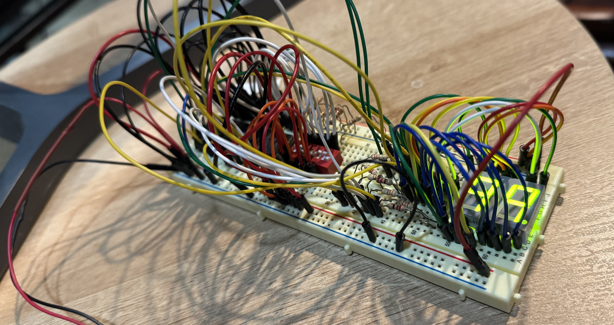

03 / Digital hardware / Built on a breadboard
EPROM display decoder
A physical circuit that turns a programmed lookup table into the signals needed to drive a two-digit seven-segment display.
- My contribution
- Decoder design, truth table & circuit assembly
- Tools
- EPROM · Digital interfaces · Breadboarding
- Outcome
- A documented breadboard implementation

The problem
Connect a seven-bit DIP-switch input to a common-anode, two-digit seven-segment display. The circuit uses an AM27C1024 EPROM to map the input to fourteen segment-control outputs.
Interface decisions
The common-anode display requires active-low output logic. I represented each digit as a segment pattern in hexadecimal and used a programmed truth table to define the output for each input.
The switch inputs connect to the seven least-significant address pins. Remaining address pins are grounded, and the two unused data outputs are left unconnected. The published circuit documents the schematic, truth table, component list, and breadboard.
What this demonstrates
- Translating a desired display into a stored input/output mapping.
- Accounting for active-low logic and component pin assignments.
- Connecting a logical design to a physical implementation.